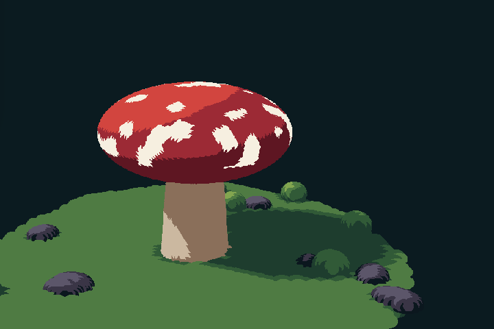

Passo a passo
Faça sua própria cena em splats
Do zero até um cogumelo 3D que você gira no navegador. Depois é só trocar o cogumelo pelo que você imaginar: as cenas da torre foram feitas exatamente assim.
Como funciona, em três imagens
// corpo da torre S.lathe([0, 0, 0], 5.5, t => 1.38 - t * 0.22, pedra, { res: 0.09 }); // telhado em cone S.lathe([0, 5.6, 0], 2.25, t => 1.52 * (1 - t), telhado, { res: 0.075 }); // vira splats S.bake();


Passo a passo
-
Confira se tem Node e Git
Abra o terminal e rode os dois comandos. O Node precisa mostrar
v18ou maior. Se algum não existir, instale em nodejs.org e git-scm.com.node --version git --version
-
Baixe os dois projetos lado a lado
O Ink Studio é o motor que transforma formas em splats. O Dimension Explorer é este projeto: a Splat Gallery, o modo 3D onde as cenas são exploradas e o modelo de cena. As duas pastas precisam ficar dentro da mesma pasta.
mkdir splats cd splats git clone https://github.com/siliconjungle/shapeshift-labs-ink-studio git clone https://github.com/Ostrowskii/dimension-explorer cd dimension-explorer
splats/ ├── shapeshift-labs-ink-studio/ ← o motor └── dimension-explorer/ ← você está aqui └── modelo/ ← a cena inicial -
Abra o modelo no navegador
O modelo já vem pronto. Abra o arquivo
modelo/index.htmlno Chrome (dois cliques no gerenciador de arquivos também funcionam) e gire o cogumelo com o mouse.xdg-open modelo/index.html
No macOS, use
open modelo/index.html; no Windows,start modelo\index.html.
Apareceu “Não foi possível iniciar o WebGL”? Seu navegador está com a aceleração 3D desligada. No Linux, abra o Chrome forçando o WebGL por software:
google-chrome --user-data-dir=/tmp/splats-webgl --ignore-gpu-blocklist --use-angle=swiftshader modelo/index.html
-
Copie o modelo para a sua cena
Nunca edite o modelo: faça uma cópia com o nome da sua cena. Tudo o que você vai mudar fica em um arquivo só,
minha-cena/cena.js.cp -r modelo minha-cena
No Windows (PowerShell):
Copy-Item modelo minha-cena -Recurse. -
Mude alguma coisa em cena.js
Abra
minha-cena/cena.jsno editor. Ele está dividido em cinco partes comentadas: paleta, materiais, formas,S.bake()e câmera. Para o primeiro teste, troque uma cor e um tamanho:- Na paleta, troque
0xd2453f(vermelho claro) por0x4f8ad8: o chapéu fica azul. - No caule, troque a altura
1.5por2.5e o chapéu de1.65para2.65: o cogumelo cresce. - Em
name: 'Cogumelo', coloque o nome da sua cena. Ele aparece como título da página.
- Na paleta, troque
-
Gere os splats e recarregue
Este comando roda o Ink Studio sobre o seu
cena.jse gravascene-data.js, o arquivo que o visualizador lê.cd minha-cena node export-scene.js
Abra
minha-cena/index.htmle recarregue comCtrl+Shift+R. A partir daqui o ciclo é sempre o mesmo: editar cena.js → node export-scene.js → recarregar. -
Gere uma imagem pixel-art OPCIONAL
O Ink Studio também desenha a cena como PNG, no estilo pixel-art. Mude o ângulo com
--yaw(giro, em radianos) e--pitch(altura).node ../../shapeshift-labs-ink-studio/cli/ink-studio.js render cena.js --out cena.png --w 900 --h 900 node ../../shapeshift-labs-ink-studio/cli/ink-studio.js render cena.js --out lado.png --yaw 1.5
-
Coloque na página inicial OPCIONAL
No
index.htmlda raiz, copie um dos cartões<a class="scene">e troque o link, a imagem e o texto. A imagem de prévia fica emthumbs/, com 720×480 pixels; uma captura de tela da sua cena serve.<a class="scene" id="minha-cena" href="minha-cena/index.html"> <img src="thumbs/minha-cena.png" alt="Descreva a cena" width="720" height="480"> <div class="text"><span class="num">CENA 5</span><h3>Minha cena</h3><p>O que tem nela.</p><span class="go">◈ Entrar no Dimension Explorer</span></div> </a>
Formas que você pode usar
Todas recebem um material ({ r: [índices da paleta] }) e um res: o espaçamento entre splats. Menor é mais detalhado e mais pesado; 0.1 é rascunho, 0.03 é detalhado.
| Forma | Para quê | Exemplo |
|---|---|---|
S.ground | Chão em disco, com relevo opcional | S.ground(grama, { h: (x, z) => 0, rad: 3, res: 0.1 }) |
S.ball | Esfera ou elipse: copas, pedras, corpos | S.ball([0, 1, 0], [1, 0.5, 1], mat, { res: 0.05 }) |
S.box | Caixa, com cantos arredondados em rd | S.box([0, 0.5, 0], [0.5, 0.5, 0.5], mat, { rd: 0.1 }) |
S.lathe | Perfil girado em torno de Y: torres, caules, cones | S.lathe([0, 0, 0], 2, [0.5, 0.3], mat, { res: 0.05 }) |
S.tube | Tubo por uma lista de pontos, afinando: troncos, galhos, chifres | S.tube([[0,0,0], [0,1,0.3]], 0.2, 0.02, mat) |
S.join | Funde formas com curva suave (crie as peças com { hold: true }) | S.join('round', corpo, [braco, perna], { r: 0.15 }) |
Truques usados nas cenas da torre
| Efeito | Como | Onde ver |
|---|---|---|
| Pintar detalhes | Uma função tex(x, y, z) no material devolve a cor de cada ponto da superfície. As pintas do cogumelo são feitas assim. | modelo/cena.js |
| Brilho próprio | Material com em: true: janelas acesas, lanternas. | dist/ (janelas) |
| Feixes de sol | Depois do S.bake(), milhares de splats dourados quase transparentes com B.dab, todos paralelos à direção do sol, S.sun. | third-scene/pond-garden.js |
| Água com reflexo | Splats de água com B.disc(…, { k: 7 }) e pond no B.finish. O visualizador reflete a cena só sobre eles. | third-scene/ |
| Vídeo girando | Renderiza 180 quadros com o Ink Studio mudando a câmera e junta com o ffmpeg. | fourth-scene/render-video.js |
Se algo der errado
- “Não encontrei o Ink Studio”
- As pastas
shapeshift-labs-ink-studioedimension-explorerprecisam estar lado a lado (passo 2). Se estiverem em outro lugar, rodeINK_STUDIO=/caminho/do/ink-studio node export-scene.js. - “Não foi possível iniciar o WebGL ou carregar a cena”
- Ou o WebGL está desligado (veja a nota do passo 3), ou o
scene-data.jsnão foi gerado: rodenode export-scene.jsdentro da pasta da cena. - Mudei o código e nada mudou
- Gere de novo com
node export-scene.jse recarregue comCtrl+Shift+R, que ignora a versão guardada pelo navegador. - A cena ficou lenta
- Aumente o
resdas formas grandes (por exemplo, de 0.03 para 0.06). O total de splats aparece no painel; até cerca de 100 mil gira bem. - Erro de sintaxe ao rodar export-scene.js
- A mensagem mostra o número da linha de
cena.js. Quase sempre é uma vírgula, um parêntese ou um colchete faltando.